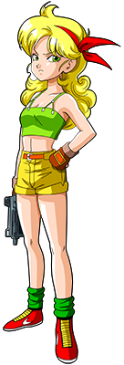
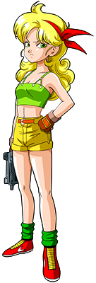
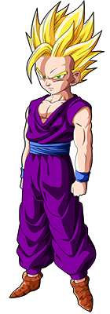

"En Dragon Ball, la inocencia de Goku y su desconocimiento sobre sus orígenes Saiyajin tejen una narrativa fascinante, marcada por encuentros con adversarios que luego se convierten en aliados inquebrantables. La transformación de enemigos como Piccolo de figuras amenazantes a compañeros leales destaca la temática recurrente del cambio y la redención. Además, la revelación de que Goku no es de este mundo añade una capa de misterio y anticipación sobre lo que está por venir, preparando el escenario para revelaciones que cambiarán para siempre el destino de la Tierra."
Dragon Ball
Bulma
Genia inventora, amiga cercana de Goku, esposa de Vegeta.Goku
El héroe legendario en constante búsqueda de superación y justicia.Jacky Chun
"Un maestro de las artes marciales con una identidad secreta en el 21° Torneo Mundial."Lunch
 
Cambia de personalidad al estornudar, amiga de Goku y los
demás.

Cambia de personalidad al estornudar, amiga de Goku y los
demás.
Dragon Ball Z
"Introduce a los Saiyajin, revelando el verdadero origen de Goku y lanzando a nuestros héroes en batallas que desafían los límites del espacio y el tiempo. La transformación de Goku en Super Saiyajin frente a Freezer no solo es un momento icónico por su impresionante despliegue de poder, sino también un punto de inflexión emocional, marcado por la pérdida de su mejor amigo, Krilin. Este acto de sacrificio y amor desencadena una evolución en Goku y en la serie misma, elevando las apuestas y profundizando el lazo entre los personajes."
"No solo se trata de la lucha entre el bien y el mal, sino también de la evolución de sus personajes principales. Desde la transformación de Gohan de un niño tímido a un guerrero valiente y poderoso durante la Saga de Cell, hasta el crecimiento de Vegeta, quien pasa de ser un príncipe arrogante a un defensor apasionado de su familia y su hogar, cada arco argumental está marcado por un desarrollo significativo y cambios profundos en la psique y el carácter de los personajes. Estas transformaciones no solo añaden capas de complejidad a la historia, sino que también nos recuerdan que el verdadero poder no proviene solo de la fuerza física, sino también del crecimiento emocional y espiritual."
Uub
Una criatura impredecible con un apetito voraz y un poder inigualable.Vegeta
 Príncipe de los saiyajin, rival eterno de Goku, evoluciona de
villano a héroe.
Príncipe de los saiyajin, rival eterno de Goku, evoluciona de
villano a héroe.
Freezer
 El tirano galáctico con un deseo insaciable de poder y control.
El tirano galáctico con un deseo insaciable de poder y control.
Gohan
 Hijo de Goku, cuya fuerza interior y compasión lo convierten en un poderoso guerreroDragon Ball GT
"En Dragon Ball GT, el regreso de Goku a su forma infantil por un deseo mal interpretado agrega una dimensión única de humor y nostalgia, mientras mantiene la tensión de los combates clásicos. Sin embargo, es la aparición del dragón de cuatro estrellas, convertido en el noble y poderoso guerrero SSJ4 Gogeta, la que roba el protagonismo, ofreciendo batallas espectaculares y mostrando el poder inigualable de la fusión. La conclusión de GT, que sugiere el fin de la jornada de Goku con el dragón Shenron, ofrece un cierre emotivo, lleno de simbolismo, dejando a los fans contemplando el legado de su héroe."
Goku Jr
El héroe legendario en constante búsqueda de superación y justicia.Trunks
"El hijo de Vegeta y Bulma, liderando la búsqueda de las Dragon Balls en Dragon Ball GT."Pequeña Pan
"La valiente nieta de Goku, lista para aventuras emocionantes en Dragon Ball GT."Dragon Ball Super
"Dragon Ball Super lleva a los personajes a enfrentarse con dioses y a desafiar las leyes del multiverso. La introducción de Beerus, el Dios de la Destrucción, y el concepto de los Universos paralelos amplía exponencialmente el campo de juego. La batalla contra Jiren en el Torneo de Fuerza no solo es una demostración de fuerza bruta, sino también un profundo examen de la determinación y la voluntad de luchar por los seres queridos. El sacrificio de Android 17 y la inesperada alianza con Freezer subrayan temas de redención y unidad frente a la adversidad."
Beerus
 El Dios de la Destrucción con un temperamento volátil y un amor por la comida
exquisita.
El Dios de la Destrucción con un temperamento volátil y un amor por la comida
exquisita.
Vegeta
El príncipe Saiyajin con un orgullo inquebrantable y una fuerza imponente.Goku Black
Enemigo con habilidades similares a las de Goku, pero con dominio del Ki oscuro.Freezer
El tirano galáctico con un deseo insaciable de poder y control por todo el universo.Dragon Ball Daima
"Mientras que los detalles específicos de Dragon Ball Daima permanecen envueltos en misterio, los rumores sugieren la introducción de un nuevo villano que rivaliza con el poder de los Dioses de la Destrucción y que podría ser clave en la revelación de secretos del pasado Saiyajin. La posibilidad de ver a Goku y Vegeta superar los límites del Ultra Instinto y el Control del Ki de Dios promete no solo batallas épicas, sino también un viaje introspectivo en lo que significa ser un guerrero en un universo donde los límites del poder están constantemente siendo redefinidos."
Freezer
 El tirano galáctico con un deseo insaciable de poder y control por todo el
universo.
El tirano galáctico con un deseo insaciable de poder y control por todo el
universo.